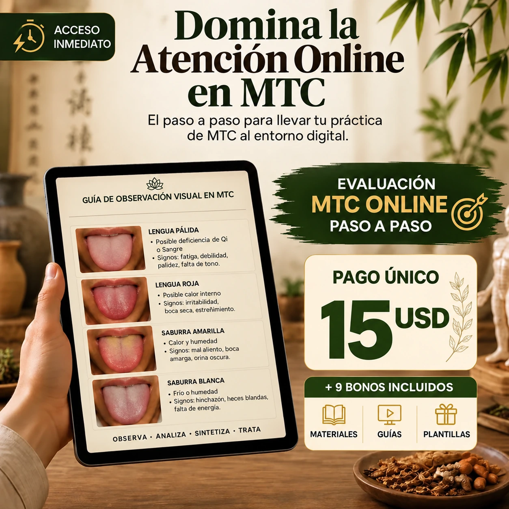
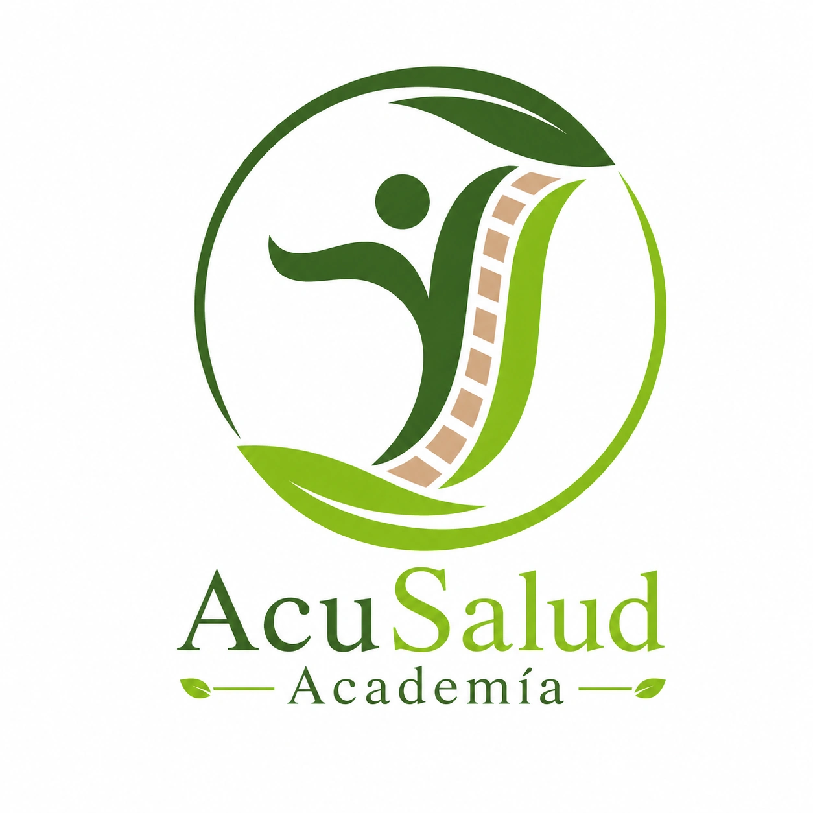

Consultas Online
Organiza cada etapa de una consulta online en MTC con un proceso fácil de seguir.
Transforma tu práctica
Lleva tus conocimientos de MTC al entorno digital y estructura un proceso profesional, desde la primera consulta hasta el seguimiento del paciente.

Manual práctico + 9 bonos · Pago único de 15 USD
Para ti, que...
La promesa
Aprende a integrar entrevista, evaluación posible a distancia, dietoterapia, orientaciones y seguimiento en un proceso claro de atención con MTC.
Lo que aprenderás
Organiza cada etapa de una consulta online en MTC con un proceso fácil de seguir.
Recoge información de forma ordenada y reconoce lo que requiere una valoración presencial.
Integra orientaciones dietéticas individualizadas en tu atención remota.
Organiza la comunicación de recomendaciones dentro de tu ámbito profesional.
Documenta acuerdos y prepara el seguimiento de cada paciente.
Presenta tu trabajo online con claridad y profesionalismo.
Materiales prácticos
Una secuencia para preparar y conducir el primer encuentro.
Información organizada para volver a ella en el próximo control.
Acuerdos claros y próximos pasos que el paciente puede consultar.
Opiniones de profesionales
Me bloqueaba solo de pensar en dar consultas online. Después del método, estructuré mi primera semana con 8 pacientes, todos a distancia. Hoy atiendo desde cualquier lugar y finalmente vivo de la MTC con tranquilidad.
La parte de Dietoterapia y prescripción online me cambió por completo. Mis pacientes vuelven, recomiendan y la facturación se triplicó en 60 días.
El kit de postconsulta y las plantillas de prescripción me ahorraron horas todas las semanas. Profesional, didáctico y directo al grano.
Y además, recibes
Un manual de dietoterapia y materiales que acompañan la consulta, el plan y el seguimiento.
Manual de fundamentos, patrones y aplicación práctica de la alimentación según la MTC.
Fichas de referencia para revisar preguntas y criterios durante la consulta.
Preparaciones organizadas según su función dentro de la dietoterapia china.
Ideas para adaptar la alimentación a las estaciones y al contexto del paciente.
Fichas para documentar la primera visita, los controles y la evolución.
Recetario de bases culinarias explicado por patrones tradicionales.
Guía para estudiar compatibilidades de la tradición dietética china con criterio.
Mensajes, resumen para el paciente y modelos de seguimiento listos para adaptar.
Tablas, ciclos y preguntas para comprender el modelo de las Cinco Fases.
Todos incluidos en el pago único
La oferta
Todo incluido, por un único pago de
Pago único · Sin cuotas · Material digital
Quién está detrás

En Acu Salud Academia transformamos temas complejos de Medicina Tradicional China en materiales claros, didácticos y aplicables a la práctica profesional.
Nuestro objetivo es ayudarte a estudiar con más orden y a comunicar cada etapa de una consulta con más claridad, desde el primer encuentro hasta el seguimiento.
Si el material no es lo que esperabas, puedes solicitar el reembolso durante los primeros 7 días conforme a las condiciones indicadas en el checkout.
Resolvemos tus dudas
Sí. Explica el proceso de atención online de forma ordenada. Para aplicarlo con pacientes debes actuar dentro de tu formación y de las normas de tu país.
Sí. El manual recorre la consulta, la recopilación de información, las orientaciones y el seguimiento. Incluye materiales complementarios listos para adaptar.
Sí. Recibirás el manual Dietoterapia China, recetas, calendario, fichas, el kit posconsulta y los demás bonos descritos arriba.
No. El material distingue entre información que puede recopilarse a distancia y evaluaciones que requieren presencia física o derivación.
Es un producto digital. Las indicaciones de acceso se mostrarán en el checkout y tras la confirmación de la compra.
No. El precio es 15 USD en un solo pago; no hay suscripción ni opción de pago en cuotas para esta oferta.
La oferta presenta una garantía de 7 días. Revisa las condiciones de compra y reembolso antes de completar el pago.
Empieza hoy
Manual principal + 9 bonos para preparar, conducir y dar seguimiento a tus consultas online.
QUIERO TRANSFORMAR MI PRÁCTICA AHORA15 USD · Pago único